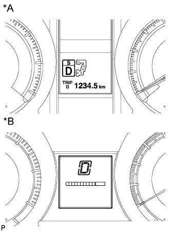

ЖИДКОСТЬ ДЛЯ АВТОМАТИЧЕСКОЙ ТРАНСМИССИИ > РЕГУЛИРОВКА |
| 1. ПРЕДВАРИТЕЛЬНЫЕ ОПЕРАЦИИ |
Для моделей с нагревателем:
Нажмите на шток термостата и закрепите его на месте.
Используя сжатый воздух и т.д., продуйте крышку термостата, чтобы очистить ее от пыли.
Отожмите шток термостата с помощью отвертки.
| *1 | Пробка |
| *2 | Отвертка |
| *3 | Шаг |
| *4 | Вал |
При отжатом штоке термостата вставьте штифт в отверстие сбоку крышки термостата. Для фиксации штока на месте вставьте штифт настолько, чтобы он прошел через отверстие с другой стороны крышки термостата.
| 2. ПЕРЕД ЗАЛИВКОЙ ЖИДКОСТИ В ТРАНСМИССИЮ |
| 3. ЗАЛИВКА ЖИДКОСТИ В ТРАНСМИССИЮ |
Снимите пробки наливного и переливного отверстий.
| *1 | Пробка наливного отверстия |
| *2 | Пробка переливного отверстия |
| *3 | Заливное отверстие |
Залейте жидкость в трансмиссию через наливное отверстие до тех пор, пока жидкость не начнет вытекать из переливного патрубка.
| *1 | Переливной патрубок |
| *a | Заданный уровень жидкости |
Установите на место пробку переливного отверстия.
Заполните трансмиссию требуемым количеством жидкости в соответствии с данными приведенной ниже таблицы.
| Ремонт | Заливаемый объем |
| Снятие поддона трансмиссии и пробки сливного отверстия | 1,7 литра (1,8 кварты США, 1,5 английской кварты) |
| Снятие корпуса клапанов трансмиссии | 4,3 литра (4,5 кварты США, 3,8 английской кварты) |
| Снятие гидротрансформатора | 5,4 литра (5,7 кварты США, 4,8 английской кварты) |
Установите пробку наливного отверстия.
Запустите двигатель на холостом ходу.
Используя рычаг переключения передач, пройдите весь диапазон передач, чтобы прокачать жидкость.
Подождите 30 с, пока двигатель работает на холостом ходу.
Выключите двигатель.
Снимите пробку наливного отверстия.
Заправьте трансмиссию недостающей жидкостью в соответствии с данными из таблицы.
Установите пробку наливного отверстия.
| 4. ПРОВЕРКА ТЕМПЕРАТУРЫ ЖИДКОСТИ |
Выключите зажигание.
Подсоедините портативный диагностический прибор к DLC3.
Включите зажигание (IG).
Войдите в следующие меню: Powertrain / ECT / Data List / A/T Oil Temperature 1.
Проверьте температуру ATF.
| 5. ПРОВЕРКА УРОВНЯ ЖИДКОСТИ |
Если используется портативный диагностический прибор:
Войдите в следующие меню: Powertrain / ECT / Active Test / Connect the TC and TE1.
Если портативный диагностический прибор не используется:
С помощью SST соедините контакты 13 (TC) и 4 (CG) на DLC3.
| *a | Вид спереди разъема DLC3 |
Запустите двигатель и оставьте его работать на холостом ходу.
Медленно переместите рычаг переключения передач из положения P в положение S, а затем последовательно включите все передачи с 1-й по 5-ю. Затем верните рычаг переключения в положение P.
|  |
Установите рычаг переключения передач в положение D, а затем в течение, по крайней мере, 6 с быстро (через каждые 1,5 с) перемещайте его вперед-назад между положениями N и D. В результате будет установлен режим определения температуры жидкости.
| *A | С мультиинформационным дисплеем |
| *B | Для моделей без мультиинформационного дисплея |
Если используется портативный диагностический прибор:
Верните рычаг переключения передач в положение P и прекратите испытание Active Test в портативном диагностическом приборе.
Если портативный диагностический прибор не используется:
Верните рычаг переключения передач в положение P и отсоедините SST от DLC3.
Дайте двигателю поработать на холостом ходу, пока температура жидкости не достигнет 40-45°C (104-113°F).
| Ниже 40°C (104°F) | 40-45°C (104-113°F) | Выше 45°C (113°F) |
| Не горит | Горит | Мигает |
На холостом ходу двигателя снимите пробку переливного отверстия и прокладку.
Подождите, пока струя вытекающей жидкости ослабеет, и жидкость начнет стекать каплями.
| *1 | Переливной патрубок |
| *a | Заданный уровень жидкости |
Снимите пробку наливного отверстия и прокладку.
Заправьте трансмиссию через наливное отверстие так, чтобы жидкость начала вытекать из переливного патрубка.
Подождите, пока струя вытекающей жидкости ослабеет, и жидкость начнет стекать каплями.
Установите новую прокладку и пробку переливного отверстия.
Установите новую прокладку и пробку наливного отверстия.
| 6. ЗАВЕРШЕНИЕ |
Выключите зажигание.
Если используется портативный диагностический прибор:
Отсоедините портативный диагностический прибор от разъема DLC3.
Для моделей с нагревателем:
Отожмите шток с помощью отвертки и извлеките штифт.
| *1 | Пробка |
| *2 | Вал |
Проверьте наличие утечек жидкости автоматической трансмиссии.